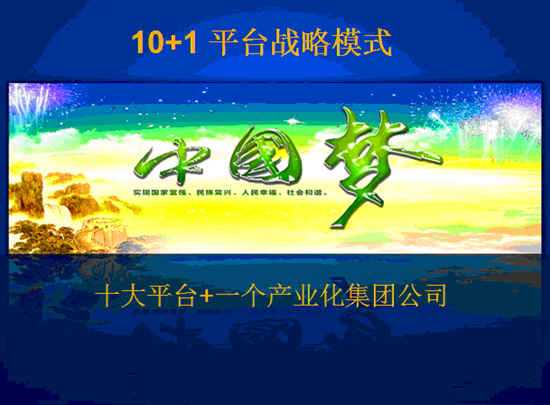

成都市和平道实业有限公司项目简介
中国大森林集团的前身为广东省中山市中兴集团有限公司，成立于1994年12月30日在佛山工商局登记注册，董事长是麦兴仔，公司注册资本9808（万元），公司致力于酒店、房地产、旅游、贸易及同科技产业等多元化业务，陆续发展中山市中兴实业公司、银湖假日山庄房地产公司、中兴产业城房地产公司、海富酒店、银湖假日山庄、世界名牌城、中兴大酒店、银湖康乐中心、板芙企业物资公司、兴昌装饰设计工程有限公司、香港国际商业投资有限公司、中兴汽车贸易公司、中兴信息服务公司、中兴房地产公司、广东商业城有限公司等15家企业，至今已组成多项经济实体，是一家业务辐射面广，经济实力雄厚的拓展型集团企业。
2013年是中国经济开放30年后第二个30年的开局之年，为适应全球气候变暖、全球经济一体化、中国产业升级等新形式的需要，由广东中山市中兴集团董事长麦兴仔先生与世界华人联合总会副主席刘华先生联合多位华人企业家共同发起在香港成立中国大森林投资控股股份集团有限公司，依托世界华人联合会的全球资源，响应习近平主席提出的“中国梦”，为实现国家富强、民族振兴、人民幸福伟大历史使命而奉献出我们的一份力量！
为践行习近平主席提出国家战略培养出无数个世界性的中国企业，中国大森林集团也提出相对应的十大平台+一个产业化集团公司的大平台战略。我们的目标是成为全世界的大森林（GF）。